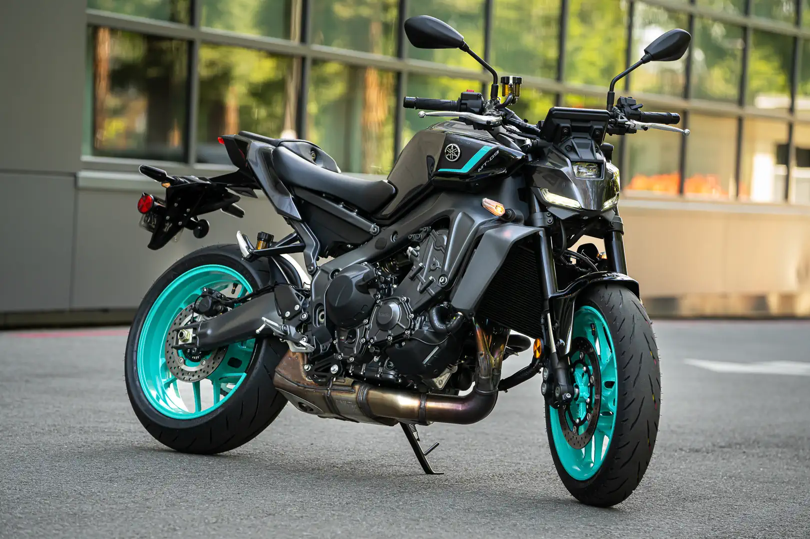
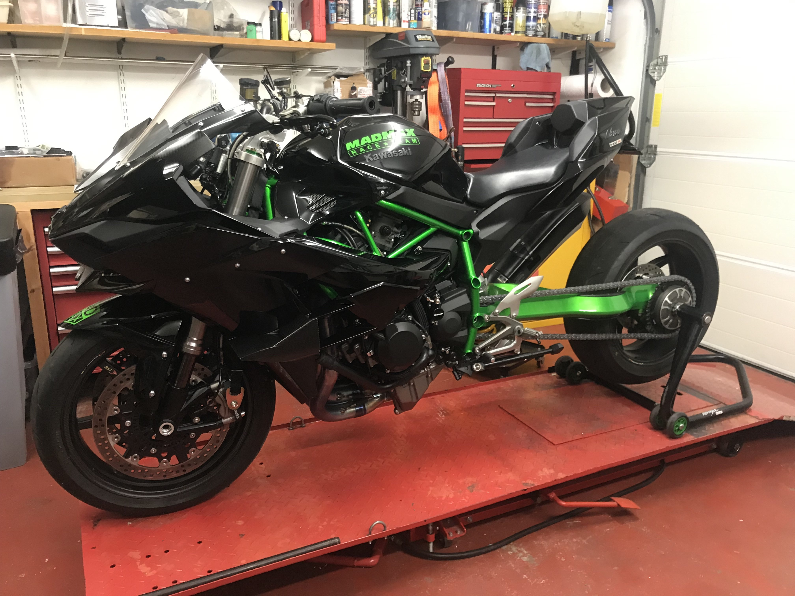
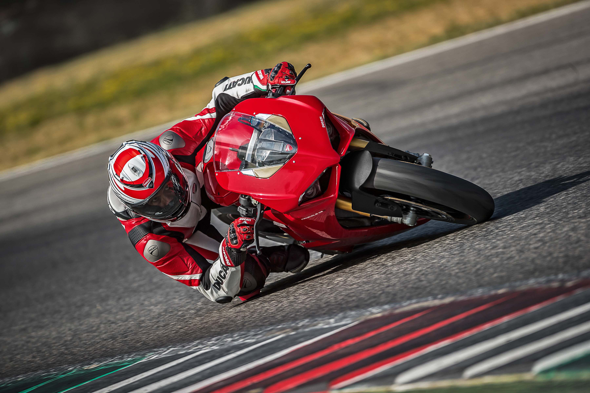

CBR1000rr

The Honda CBR1000RR was developed by the same team that was behind the MotoGP series.[3] Many of the new technologies introduced in the Honda CBR600RR, a direct descendant of the RC211V, were used in the new CBR1000RR such as a lengthy swingarm, Unit Pro-Link rear suspension, and Dual Stage Fuel Injection System (DSFI). 2004–2005 (SC57) 2005 CBR1000RR The seventh-generation RR (SC57), the Honda CBR1000RR, was the successor to the 2002 CBR954RR. While evolving the CBR954RR design, few parts were carried over to the CBR1000RR.[4] The compact 998 cc (60.9 cu in) in-line four was a new design, with different bore and stroke dimensions, race-inspired cassette-type six-speed gearbox, all-new ECU-controlled ram-air system, dual-stage fuel injection, and center-up exhaust with a new computer-controlled butterfly valve. The chassis was likewise all-new, including an organic-style aluminum frame composed of Gravity Die-Cast main sections and Fine Die-Cast steering head structure, inverted fork, Unit Pro-Link rear suspension, radial-mounted front brakes, and a centrally located fuel tank hidden under a faux cover. Additionally, the Honda Electronic Steering Damper (HESD) debuted as an industry first system which aimed to improve stability and help eliminate head shake while automatically adjusting for high and low speed steering effort. A longer swingarm acted as a longer lever arm in the rear suspension for superior traction under acceleration and more progressive suspension action. Longer than the corresponding unit on the CBR954RR (585 mm (23.0 in) compared to 551 mm (21.7 in)) the CBR1000RR's 34 mm (1.3 in) longer swingarm made up 41.6 percent of its total wheelbase. The CBR1000RR's wheelbase also increased, measuring 1,405 mm (55.3 in); a 5 mm (0.20 in) increase over the 954. Accommodating the longer swingarm was another reason the CBR1000RR power plant shared nothing with the 954. Shortening the engine compared to the 954 meant rejecting the conventional in-line layout. Instead, engineers positioned the CBR1000RR's crankshaft, main shaft and countershaft in a triangulated configuration, with the countershaft located below the main shaft, dramatically shortening the engine front to back, and moving the swingarm pivot closer to the crankshaft. This configuration was first successfully introduced by Yamaha with the YZF-R1 model in 1998 and inspired superbike design in the following years. Positioning this compact engine farther forward in the chassis also increased front-end weight bias, an effective method of making high-powered liter bikes less wheelie prone under hard acceleration. This approach, however, also provided very little space between the engine and front wheel for a large radiator. Engineers solved this problem by giving the RR a modest cylinder incline of 28°, and moving the oil filter from its frontal placement on the 954 to the right side of the 1000RR engine. This allowed the RR's center-up exhaust system to tuck closely to the engine.
yamaha mt-09

The MT-09 competes against the Triumph Street Triple, Kawasaki Z900, and MV Agusta Brutale 800.[11] It is intended to restore Yamaha's fortunes, as the factory has in recent years lost its reputation for innovation.[opinion][12] The MT-09's product manager, Shun Miyazawa, said Yamaha had considered parallel-twins, inline-threes, inline-fours, and V-twins, but that the inline-three gave the "best solution" of power, torque, and low weight. Comparing the MT-09 to the Street Triple, he said the Triumph was a streetfighter, but the Yamaha was a "roadster motard".[13] Both the frame and the double-sided swingarm are made of lightweight alloy, which are cast in two pieces. The frame castings are bolted together at the headstock and at the rear, but the swingarm parts are welded together.[13] The MT-09 is Yamaha's first inline-three motorcycle since the XS750 and XS850, which were produced from 1976 to 1981, marking a return to the configuration after a long hiatus. In 2017, the MT-09 was updated with fully adjustable suspension, traction control, antilock brakes, slipper clutch, LED headlights, and updated styling.[2] In October 2020, the MT-09 received the second update with a larger 890 cc (54 cu in) engine.[14] Tracer 900/FJ-09/MT-09 Tracer Main article: Yamaha Tracer 900 The Tracer 900 (FJ-09 in North America) is a sport touring model introduced in 2015 based on the MT-09. From 2016, in Europe and the United Kingdom, the name changed to Tracer 900 from MT-09 Tracer.[15] It differs from the MT-09 in a number of ways, including that it has a partial fairing, a larger fuel tank, ABS brakes, handguards, centerstand, a 12-volt power socket, traction control, revised fuel map, drive-by-wire throttle mapping with three selectable riding modes. The display is very similar to the XT1200Z Super Ténéré's. It also has LED headlights and taillight.[16]
kawasaki H2R

The Kawasaki Ninja H2 is a supercharged four-stroke hypersport-class[13] motorcycle in the Ninja sports bike series manufactured by Kawasaki, featuring a variable-speed centrifugal supercharger.[14][15][16][17] Its namesake is the 750 cc Kawasaki H2 Mach IV,[18][19] an inline triple that was introduced by Kawasaki in 1972 to "disrupt what it saw as a sleeping motorcycle market".[20] Its Ninja H2R track-only variant is the fastest and most powerful production motorcycle on the market, producing a maximum of 310 horsepower (230 kW) and 326 horsepower (243 kW) with ram-air.[1] The H2R has 50% more power than the fastest street-legal motorcycles, while the street-legal Ninja H2 has a lower power output of 200 hp (150 kW)[21]–210 hp (160 kW) with ram-air.[1] Design Kawasaki selected the literbike platform for its top-of-the-line Ninja H2 model, rather than continuing with the higher-displacement Ninja ZX-14 hyperbike. Cycle World's Kevin Cameron explained that the literbike class is "the center of the high-performance market", attracting the best development in racing, with the best chassis and suspension design, so it made sense for Kawasaki to create a machine that could leverage this.[20] The H2 is the first production motorcycle with a supercharger,[22] although turbochargers were available on some models in the early 1980s. Specifications in the infobox are from Kawasaki unless noted.[23]
ducati panigale v4

The Ducati Panigale V4 is a sport bike with a 1,103 cc (67.3 cu in) desmodromic 90° V4 engine introduced by Ducati in 2018 as the successor to the V-twin engined 1299. A smaller engine displacement version complies with the Superbike category competition regulations which state "Over 750 cc up to 1000 cc" for three and four cylinder 4-stroke engines.[3] The name "Panigale" comes from the small manufacturing town of Borgo Panigale.[4] The Panigale V4 uses the new Desmosedici Stradale V4 engine, derived from the Desmosedici MotoGP racing engine. Development Wade says the Panigale V4 is Ducati's first large-production street bike with a V4 engine, Ducati having primarily used V-twins since the 1960s, except on prototypes and racing motorcycles.[5] They had sold a short run of 1,500 street-legal V4 Desmosedici RRs in 2007 and 2008[6][7] and made two prototypes of the Apollo V4 in 1964. The initial development of the Panigale V4 started with the 2015 MotoGP racing engine. Ducati said the Panigale V4 was designed to combine racing features, while also being an entertaining and rideable motorcycle with a durable engine.[7] This created the challenge of designing an engine that could keep the MotoGP engine's counter-rotating crankshaft, and large bore diameter, but have the 24,000 km (15,000 miles) service intervals expected on consumer motorcycles.[7] Originally, Ducati was initially keeping the MotoGP bike's chassis, but later changed to a completely new front frame they said has less weight and more stability.[7] Design Cycle World said in spite of being a V4, the new Panigale is only slightly wider than the V-twin 1299.[8] The weight is 4.5 kg (10 lb) heavier than the 1299, with foot pegs 10 mm (0.39 in) higher.[8] Unlike the prior 1199 and 1299 where the engine is the primary element of the frame, the engine is surrounded by a more conventional aluminum perimeter frame.[9] The Panigale V4's electronics include a wheelie control system derived from the 1299 Superleggera, along with traction and drift control.[10] It has carbon fiber wheels, Brembo Stylema R front brakes, and a dry weight of 173 kg. The brakes have a new ABS designed for high speed cornering.[10][7] Ducati and Brembo designed 70 g (2.5 oz)-lighter brake calipers than the 1299's.[11] The bike's tires, the Diablo Super Corsa SP developed by Ducati and Pirelli, have a new rear compound.[10]
BMW S1000rr

BMW S1000RR is a race orientated sports motorcycle initially made by BMW Motorrad to compete in the 2009 Superbike World Championship,[1] that is now in commercial production. It was introduced in Munich in April 2008,[2] and is powered by a 998 cc (60.9 cu in) transverse inline four-cylinder engine redlined at 14,200 rpm.[3] BMW made 1,000 S1000RRs in 2009 to satisfy World Superbike homologation requirements, but expanded production for commercial sale of the bike in 2010. It has a standard anti-lock braking system, with an optional electronic traction control. As of 2016, it has a wet weight of 204 kg (450 lb), and produces 148.4 kW (199.0 hp; 201.8 PS) at 13,500 rpm.[4] With 133.6 kW (179.2 hp; 181.6 PS) to the rear wheel, it was the most powerful motorcycle in the class on the dyno.[5] BMW S1000RR is currently the second fastest road legal bike, surpassing the Kawasaki Ninja H2 in most scenarios. It goes up to 310kmph in the latest generation and accelerates to 300kmph in just 20 seconds. History S1000RR engine cutaway at the BMW Museum. 2009–2011 (K 46) 2011 BMW S1000RR The S1000RR was released in 2009 and was considered the best-equipped sport bike in the 1000 cc category, and with a bore and stroke of 80.0 mm × 49.7 mm (3.1 in × 2.0 in), it also had the biggest bore in its class. The bike came factory fitted with ABS and dynamic traction control, a first for road-going superbike at the time. On top of this, it came standard with three riding modes (Wet, Sport and Race) with an additional riding mode (Slick) available only after connecting a dongle, that you received with the bike, to a special jack under the seat. It was also the first production motorcycle to offer an optional quick shifter. This is a clutchless shifter that allowed you to upshift with no clutch actuation even at full throttle. After the initial delivery of motorcycles the factory started shipping them with a software governor that limited RPM to 9000 for a short break in period that was later removed by the dealers.[6] The 2011 bike remained unchanged, keeping the same livery options, engine, chassis and suspension.[7][8]